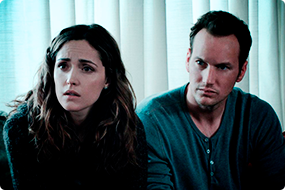
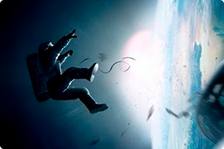
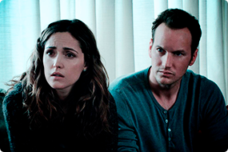
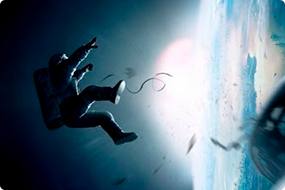

Мы берем на себя много, потому что мало чего боимся
— Том Демарко. Deadline
Любимые фильмы:
- Аватар
- Джокер
- Мстители
- Темный рыцарь
Любимая музыка:
- Рок
- Deep House
- Progressive House
- Джаз-фанк
Jane Doe
В 1930-е годы прошлого века физик Джордж Гамоу из университета штата Колорадо начал публиковать
мини-сериал рассказов о неком мистере Томпкинсе,
банковском клерке средних лет. Мистер Томпкинс, как
явствовало из этих историй, интересовался современной
наукой.
Мое хобби
Он регулярно посещал вечерние лекции местного профессора
и, разумеется, всегда засыпал на самом интересном месте.
А когда просыпался, то обнаруживал себя в каком-нибудь
параллельном мире, где один из основных законов физики
действовал не так, как в его мире.
Любимые фильмы

 



Побег из Шоушенка
Наркоз
Астрал
Гравитация
Успешный банкир Энди Дюфрейн обвинен в убийстве собственной жены и ее любовника. Оказавшись в тюрьме под названием Шоушенк, он сталкивается с жестокостью и беззаконием, царящими по обе стороны решетки. Каждый, кто попадает в эти стены, становится их рабом до конца жизни. Но Энди, вооруженный живым умом и доброй душой, отказывается мириться с приговором судьбы и начинает разрабатывать невероятно дерзкий план своего освобождения.
Клай Бересфорд вынужден лечь под нож. Однако в процессе операции на сердце он неожиданно приходит в себя. Находясь в парализованном состоянии, будучи не в силах пошевелить ни рукой, ни ногой, он, тем не менее, чувствует каждое касание скальпеля к своей плоти…
Джош и Рене переезжают со своими детьми в новый дом, но не успевают толком распаковать вещи, как начинаются странные события. Необъяснимо перемещаются предметы, в детской звучат странные звуки… Но в настоящий ужас приходят родители, когда их десятилетний сын Далтон впадает в кому. Все усилия врачей в больнице помочь мальчику безуспешны.
Доктор Райан Стоун, блестящий специалист в области медицинского инжиниринга, отправляется в свою первую космическую миссию под командованием ветерана астронавтики Мэтта Ковальски, для которого этот полет — последний перед отставкой. Но во время, казалось бы, рутинной работы за бортом случается катастрофа.
Шаттл уничтожен, а Стоун и Ковальски остаются совершенно одни; они находятся в связке друг с другом, и все, что они могут, — это двигаться по орбите в абсолютно черном пространстве без всякой связи с Землей и какой-либо надежды на спасение.